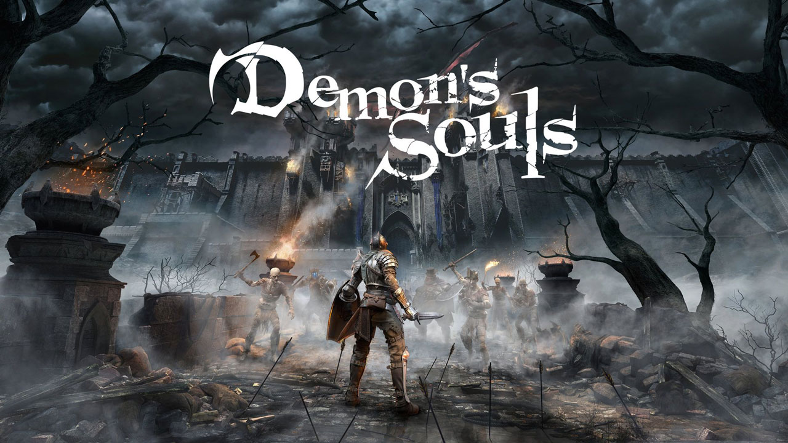
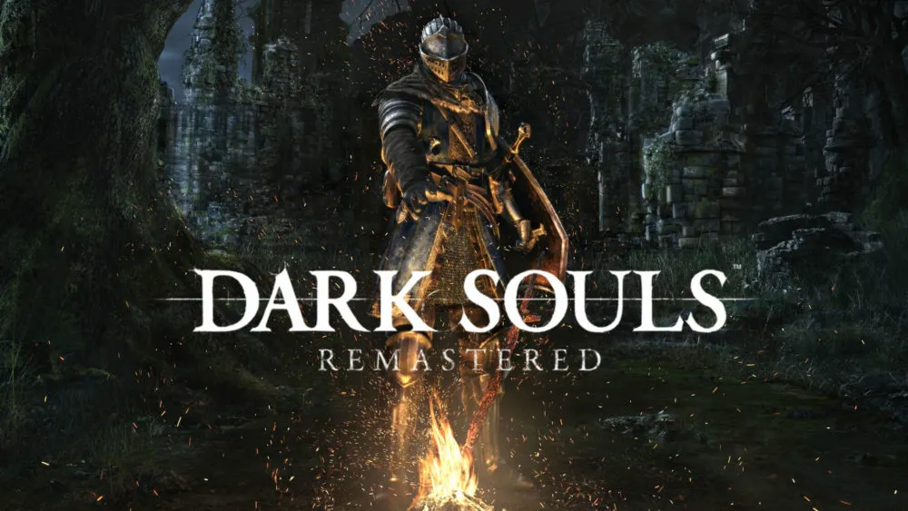
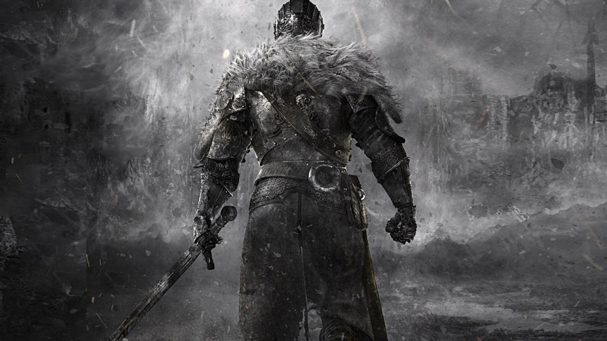
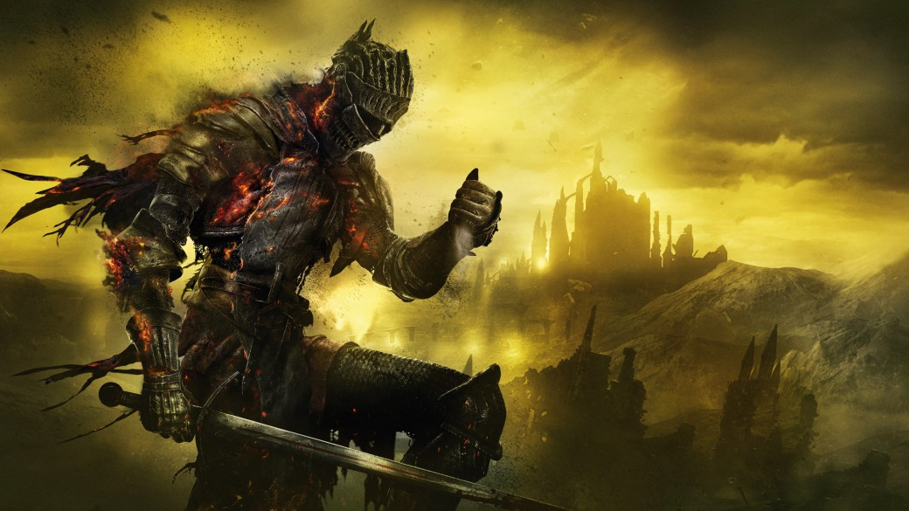
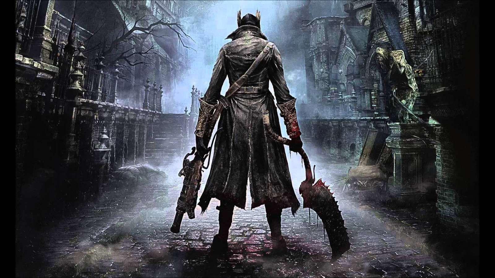
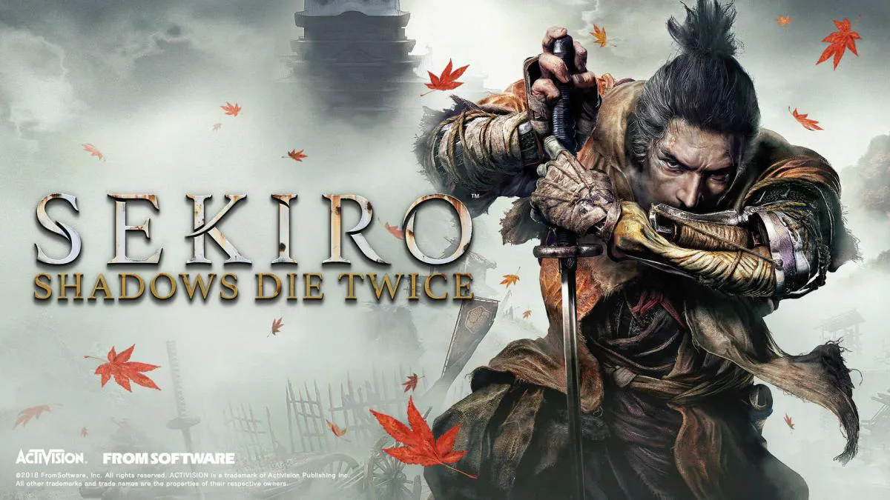
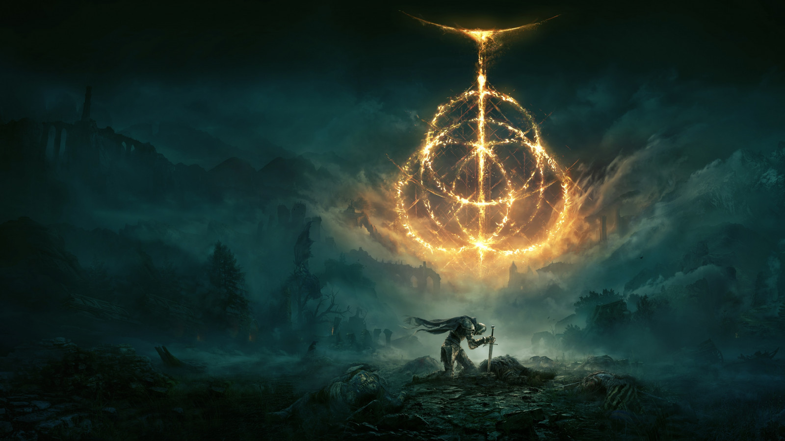

Demon's Souls

Su historia tiene lugar en el ficticio reino de Boletaria, y si bien no se precisa la época en la que se encuentra, se concluye que es en la Edad Media, debido a sus características. En la antigüedad, debido al mal uso de la magia conocida como las Artes de Alma, Boletaria fue atacada por un ser llamado "El Anciano" y el mundo casi fue consumido por la "Niebla Profunda" que trajo con él y los demonios devoradores de almas que surgieron de ella. El Anciano es un ser demoníaco de un poder supuestamente inimaginable para el ser humano según lo relatado a lo largo de la historia; también se cuenta que el dios en que creían los habitantes de Boletaria era él, aunque las personas no lo supieran.
Finalmente se logró adormecer y aprisionar al Anciano en el Nexo, un santuario supuestamente ubicado al norte del reino, salvando así lo que quedaba de Boletaria. En el presente del juego, el actual gobernante, el rey Allant, restauró las Artes de Alma, provocando así el despertar del Anciano y su ejército de demonios. Boletaria ahora se encuentra siendo consumida por dichos demonios y la niebla profunda que devora todo a su paso, y los humanos que han sido despojados de sus almas por demonios se están convirtiendo en monstruos salvajes sin cordura. Los jugadores asumen el papel de un guerrero que se adentra en la niebla que envuelve a Boletaria. Y este después de ser asesinado, se despierta en el Nexo y se encuentra con una demonio benévola llamada Dama de Negro, así como con varios otros personajes.
Ahora ligado al Nexo hasta que el Anciano vuelva a dormir, el jugador viaja a cinco regiones del reino de Boletaria, matando a los poderosos demonios que controlan esas áreas y absorbiendo sus almas para aumentar su fuerza, y así poder enfrentarse al Rey Allant. Estos demonios recolectan almas de todo ser vivo para dárselas al Anciano ya que este no puede recolectarlas por sí mismo debido a su encierro en el Nexo; se dice que aquel que pierde su alma estando vivo pierde su mente, sus recuerdos y su humanidad convirtiéndose en una bestia violenta y sanguinaria, y que si un humano llegase a obtener un alma de demonio, este adquiriría un poder inimaginable. Una vez eliminados todos los demonios, y habiendo derrotado al rey Allant, el Anciano hará su llamada al jugador dando inicio al evento final del juego.
Dark Souls

Dark Souls es un RPG de acción en tercera persona, que se caracteriza por una atmósfera oscura y una dificultad muy por encima de los estándares actuales. El juego recibió excelentes críticas debido a su jugabilidad desafiante, su atmósfera absorbente, sus controles prácticos y a su innovador modo multijugador, la mayoría de estos aspectos importados de su predecesor espiritual Demon's Souls.
El juego tiene lugar en los últimos días de la Edad del Fuego, la cual comenzó tras la derrota de los Dragones de Piedra que anteriormente reinaban el mundo. Durante esta época el mundo era un lugar oscuro y lúgubre habitado solamente por una raza inmortal de dragones cuya capacidad de prolongar su vida eternamente provenía de sus escamas pétreas.En esta época aparentemente no existía aún ninguna llama, por lo que el mundo era un lugar completamente oscuro, amorfo y casi desierto. Así fue hasta que de la nada y sin nada que la provocase más que un ciclo natural, surgió la primera llama, un grupo de seres descubrieron en ella cuatro grandes almas, Nito el primer ser en morir, la bruja de Izalith y sus hijas del Caos, Gwyn el señor de la ceniza y portador del alma en teoría más poderosa, y por último el furtivo pigmeo portador de el Alma oscura y que desapareció poco después de hacerse con la misma. Con el poder adquirido, Gwyn y los otros grandes señores(Nito y la bruja de Izalith) desafiaron a los dragones con la ayuda de los humanos como es revelado en Dark Souls 3 y posteriormente la ayuda de Seath, que tenía cierta envidia a sus hermanos por este carecer de escamas eternas, y gracias a todo esto fue que Gwyn ganó aquella gran guerra. Con todos estos acontecimientos empieza la historia de Dark Souls, repleta de secretos y que hasta día de hoy realmente no se ha podido dar una respuesta definitiva a la misma, más que hay muchas teorías al respecto.
En total el juego ha recibido 1 DLC's:
Artorias of the Abyss (Artorias Del Abismo)
Dark Souls 2

Similar al juego anterior, el jugador puede personalizar su género y características físicas además de su clase inicial, que determina las estadísticas y el equipo que el jugador llevará al comienzo del juego, y el obsequio inicial.
Desde una perspectiva en tercera persona, el jugador explora un mundo abierto y continuo prácticamente del mismo tamaño que el del juego original, pero con más libertad en la manera en que el jugador puede progresar.
Similar en cuanto al nivel de dificultad de su predecesor, el jugador debe enfrentar en un ambiente hostil a implacables enemigos y jefes.
La historia de Dark Souls II no conecta directamente con la de Dark Souls, a pesar de desarrollarse en el mismo mundo.
El juego tiene lugar en Drangleic, una tierra anteriormente próspera bajo el mando del rey Vendrick, la cual ha caído en la ruina a través de los años debido a la guerra entre humanos y gigantes, la desaparición repentina del rey y una nueva plaga abismal. Al igual que otros, el protagonista ha llegado al reino desmoronado en busca de una cura para su aflicción, la maldición del no muerto.
En total el juego ha recibido 3 DLC'S:
Crown of the Sunken King (Corona del Rey Hundido)
Crown of the Old Iron King (Corona del Viejo Rey de Hierro)
Crown of the Ivory King (Corona del Rey de Marfil)
Dark Souls 3

Dark Souls 3 es el final de la saga y presenta un mundo, el Reino de Lothric, al borde del Apocalipsis por culpa de "la maldición de los no muertos", y la razón por la que el mundo aún no se ha sumido en la oscuridad totalmente es el sacrificio que muchos héroes e incluso dioses hicieron al reavivar la llama original, la cual se encarga de mantener la "Era del fuego", dejando que esta consumiera sus respectivas almas y cuerpos.
El juego presenta mecánicas similares a Dark Souls y Dark Souls II, aunque con algunas diferencias: Las animaciones del personaje son casi idénticas a las del primer título, pero ocurren a mayor rapidez; Al tomar los frascos de estus, el personaje se puede mover lentamente (en títulos anteriores el personaje no podía), la patada vuelve, y la búsqueda de fragmentos de estus, polvo de hueso, anillos, armas, armaduras, escudos, pergaminos mágicos, tomos de piromancias, milagros se mantiene, y la barra de magia vuelve (PC).
El protagonista, el personaje al que se da vida en este título, es uno de los que llaman "Latentes"; estas personas son humanos que consiguieron llegar al horno de la Primera Llama, trataron de enlazarla, pero fueron consumidos y hechos ceniza sin conseguir su objetivo. Estos humanos son despertados cuando los Señores de la Ceniza (aquellos que sí que fueron suficientemente poderosos como para enlazar la Primera Llama) son despertados pero no cumplen su deber: quedarse en sus tronos (en el Santuario de Enlace del Fuego) hasta que se les vuelva a sacrificar para enlazar la Primera Llama. Es decir, cuando los Señores de la Ceniza no quieren volver a prolongar la Era de los Dioses (la era del fuego) y abandonan sus tronos, los Latentes deben ir a por ellos para matarlos y devolver sus cenizas a los Tronos, y el Latente que lo consiga, deberá, como última parte del plan, inmolarse él mismo, y convertirse de esta forma, en un Señor de la Ceniza.
En total el juego ha recibido 2 DLC's:
Ashes of Ariandel (Cenizas de Ariandel)
The Ringed City (La Ciudad Anillada)
Bloodborne

Bloodborne presenta elementos de RPG-acción en tercera persona y primera persona, similar a los anteriores videojuegos dirigidos por Hidetaka Miyazaki, Demon's Souls y Dark Souls.Los controles son un tanto peculiares a diferencia con otros títulos similares, como Diablo III.
El combate requiere un ritmo acelerado y necesita de un enfoque ofensivo con el fin de que los jugadores puedan combatir contra las densas hordas de enemigos. El personaje del jugador es ágil y es capaz de realizar extensivos ataques de embestidas alrededor de los enemigos mientras utiliza la característica lock on.
El juego tiene lugar en la ciudad gótica decrépita de Yharnam, conocida por sus avances médicos basados en el uso de la sangre como principal elemento.Con los años, muchos peregrinos viajaron a la ciudad en busca del remedio para curar sus aflicciones. El jugador, por razones desconocidas, emprende el viaje a Yharnam buscando una poderosa sangre conocida como «Sangre pálida» que más tarde descubriremos, proviene de unos seres adorados como dioses apodados los grandes, cuyo diseño parece inspirado en las criaturas del escritor H. P. Lovecraft. Una vez en Yharnam, descubrimos que la ciudad está infestada por una enfermedad endémica que ha transformado a la mayoría de sus ciudadanos en criaturas bestiales y ulcerosas. Deberemos recorrer las calles de Yharnam y sobrevivir a las emboscadas de unos habitantes violentamente trastornados y sus criaturas monstruosas.
Poco después de su llegada a Yharnam, una vez fallece el personaje del jugador, este se encuentra con un reino espectral llamado Sueño del Cazador, que actúa como un santuario y taller.El jugador se encuentra con dos entidades: Gehrman, un hombre anciano en silla de ruedas que ofrece asesoramiento a los Cazadores; y La Muñeca, una muñeca de tamaño natural, viva, que ayuda al jugador a subir de nivel. Gehrman informa al jugador que a fin de obtener la sangre que busca, tienen que cazar a los diferentes monstruos que asolan Yharnam, para destruir esta pesadilla y así evitar que la oscuridad invada los sueños.
En total el juego ha recibido 1 DLC's:
Old Hunters (Antiguos Cazadores)
Sekiro

En un reinventado período Sengoku de finales del siglo XVI en Japón, el señor de la guerra Isshin Ashina organizó un golpe sangriento y tomó el control de la tierra de Ashina del Ministerio del Interior. Durante este tiempo, un shinobi errante llamado Ukonzaemon Usui, conocido por muchos como Búho, adoptó a un niño huérfano sin nombre, al que nombró Lobo, y lo entrenó en los caminos del shinobi.
Dos décadas más tarde, el clan Ashina está al borde del colapso debido a que Isshin está ahora anciano y enfermo y a que los enemigos del clan se fueron acercando constantemente por todos lados. Desesperado por salvar a su clan, el nieto de Isshin, Genichiro, buscó a Kuro, el descendiente celestial, para poder usar el "Acervo del Dragón" del niño para crear un ejército inmortal. Lobo, ahora un shinobi de pleno derecho y el guardaespaldas personal de Kuro, pierde su brazo izquierdo al no poder detener a Genichiro. Sin embargo, ya que recibió la sangre del dragón de Kuro tres años atrás, Lobo sobrevive a sus heridas y se despierta en un templo abandonado. En el templo, se encuentra con el Escultor, un antiguo shinobi llamado Orangután que ahora esculpe estatuas de Buda, y Lobo encuentra que su brazo perdido ha sido reemplazado por la Prótesis Shinobi, un brazo artificial sofisticado que puede empuñar una gran variedad de artilugios y armas.
Elden Ring

Elden Ring es un videojuego de rol de acción en tercera persona, con una jugabilidad centrada en el combate y la exploración. Presenta características similares de otros juegos desarrollados por FromSoftware, tales como la saga Dark Souls, Bloodborne y Sekiro: Shadows Die Twice. Localizado en un mundo abierto, el jugador puede explorar libremente las Tierras Intermedias y sus seis áreas principales. Estas localizaciones varían desde Necrolimbo, una zona de prados verdes y ruinas antiguas, hasta Caelid, un páramo poblado de monstruos no-muertos
Elden Ring tiene lugar en las Tierras Intermedias, un continente ficticio gobernado por diferentes semidioses. Anteriormente estaba gobernado por la Reina Marika la Eterna, la cual actuaba como guardiana del Círculo de Elden, una poderosa fuerza que se manifiesta como el concepto físico del orden. Cuando Marika destruyó el Círculo de Elden y desapareció, sus hijos, todos semidioses, empezaron a guerrear para obtener fragmentos del Círculo en la Guerra de la Devastación. Cada semidios posee un fragmento del Círculo, llamado Gran Runa, la cual les proporciona fuerza. En el juego el personaje jugador es un Sinluz, un miembro de un grupo de exiliados de las Tierras Intermedias que fueron convocados de vuelta tras la Guerra de la Devastación. Como un Sinluz, el jugador debe atravesar las Tierras Intermedias para reparar el Círculo de Elden y convertirse en el Señor del Círculo.